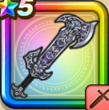

はかいのつるぎ
攻略班 8.0点 / もろば斬りまじん斬りブレードガード破壊の双隼破壊の斬光※錬成で強化可能
くわしい特徴
【レベル別習得スキル】 Lv1【バトマス】攻撃力+5 Lv1もろば斬り（消費MP：7）敵1体に威力200%の斬撃ダメージを与えるが、与えたダメージの20％を自身も受ける Lv10まじん斬り（消費MP：7）敵1体に30%の確率で斬撃ダメージの会心の一撃を与える。こころや心珠で会心率を上げても影響を受けない。 Lv15ブレードガード（消費MP：7）自身のガード率を1段階上げる Lv20破壊の双隼（消費MP：28）敵1体に1発190%のジバリア属性斬撃を2回与える。まれに呪いによって最大HPの15％HPが減少する Lv30破壊の斬光（消費MP：33）敵全体に300%のジバリア属性斬撃ダメージ。まれに呪いによって自分のMPが15減る Lv35物質系へのダメージ+5% Lv40ゾンビ系へのダメージ+5% Lv45攻撃時+2%の確率で眠りを与える Lv50攻撃力+12錬成スキル改1破壊の斬光改（消費MP：60）敵全体に威力600%のジバリア属性斬撃ダメージを与えるが、呪いによって自分のMPとHPが減る改2すばやさ-60改3攻撃力+40改4錬成ぶき特別演出解放・メガモン討伐結果発表時に特別演出が追加・武器の見た目に特別なエフェクトが追加 【限界突破スキル】 1凸スキルの斬撃・体技ダメージ+5% 2凸スキルの斬撃・体技ダメージ+5% 3凸スキルの斬撃・体技ダメージ+5% 4凸スキルの斬撃・体技ダメージ+5%